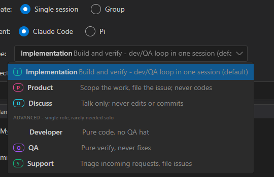
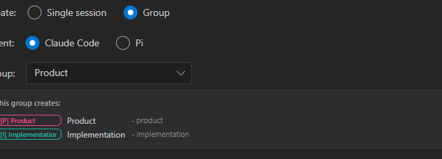
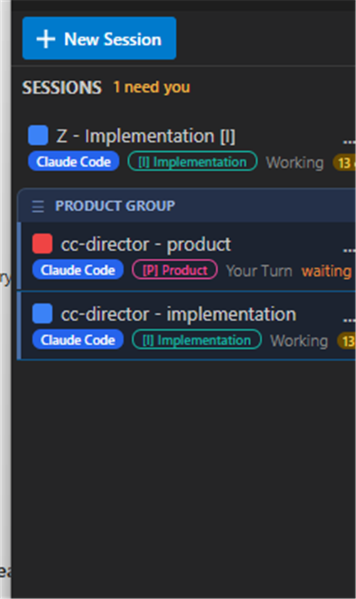

feat/issue-259-implementation-merge · CenCon Development Method ·
Result: ALL ACCEPTANCE CRITERIA MET
SessionType.Implementation = 6 - builds AND
verifies in one session (the developer<->QA loop), owns the working tree. Its playbook drives
write -> verify -> fix -> re-verify. (SessionType.cs)NewSessionDialog.axaml)- product /
- implementation suffixes. (SessionGroupDefinition.cs)#14B8A6; Developer keeps
its prior no-badge default. (SessionViewModel.cs + group preview)NewSessionDialog.axaml.cs)DEVELOPMENT_METHOD.md now describes Developer + QA as roles inside one
Implementation session and softens the SOC 2 "separate QA identity" line to role separation.Developer/
QA/Support and the #254 Implement/BugReport still load.
Note "Implement" (legacy alias -> Developer) is NOT confused with "Implementation".| Criterion | Result / proof |
|---|---|
| Type picker: Implementation default + Product/Discuss primary, Developer/QA/Support under an Advanced divider | PASS Fig 1 - live dropdown open. |
| Group "Product" previews exactly 2 (Product, Implementation); button reads "Start 2 Sessions" | PASS Fig 2. |
Creating the Product group makes <repo> - product + <repo> - implementation with correct types |
PASS Fig 3 + API: both share groupId 6d07ebbb-..., types Product/Implementation. |
| Implementation playbook = build-then-verify loop + single-tree ownership | PASS test Playbook_Implementation_BuildAndVerifyLoop_Issue259 + a live Implementation session was created via the API. |
| Old type names still load (Developer/QA/Support + #254 Implement/BugReport) | PASS theory PersistedSession_LegacyTypeName_StillDeserializes + SessionTypeNames_TryParse_AcceptsCanonicalAndLegacy. |
| I teal badge on the rail; Developer keeps prior treatment | PASS Fig 3 - "Z - Implementation [I]" teal badge. |
DEVELOPMENT_METHOD.md = Developer+QA as roles in one Implementation session, no separate QA identity |
PASS three targeted edits to the topology + SOC 2 lines. |
| Unit tests (group=2 in order; ComposeSeed; serialization + legacy alias) | PASS 50/50 in the change's area (SessionType + GroupReorder + TurnBrief). Avalonia builds 0/0. |

Implementation is selected (teal, default). Primary: Implementation / Product / Discuss. Below the "ADVANCED - single role, rarely needed solo" divider: Developer / QA / Support. No IssueSubmitter.

The Product group now creates two tied sessions; the start button reads "Start 2 Sessions".

"Z - Implementation [I]" carries the teal badge. The PRODUCT GROUP bracket holds cc-director - product [P] and cc-director - implementation [I], adjacent.
cc-director5.exe), launched via the cc-director-launch scheduled task (clean parentage).cc-director.cc-director5.exe (path-confirmed).This change updates docs/cencon/DEVELOPMENT_METHOD.md in the same commit (the session topology
moved from four sessions to Product + Implementation + Support, with Developer/QA as roles inside Implementation).
The four roles and the flow:* labels are unchanged; no architecture_manifest / security_profile drift.